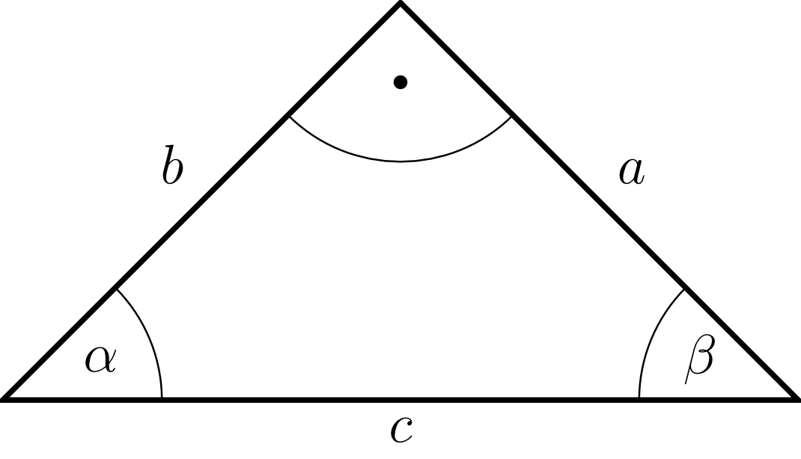

1 - 1.5
5.6.2 Trigonometrie am Dreieck
Fährt man eine Straße mit einem Gefälle von fünf Prozent bergab, nimmt die Höhe alle hundert Meter um fünf Meter ab. Dabei wird der Höhenunterschied im Vergleich zur Horizontalen betrachtet.
Demnach beträgt das Gefälle , wenn der Höhenunterschied zwischen zwei Positionen beträgt, deren horizontaler Abstand beträgt. Geometrisch formuliert, ist die Verbindungsstrecke zwischen den beiden Punkte eine Diagonale eines Quadrats. Damit hat der Winkel zwischen der horizontalen Vergleichsstrecke und der Diagonalen, auf der man sich bewegt, das Winkelmaß von . Schon die Berechnung, dass zu einem Gefälle oder einer Steigung von der Winkel rund groß ist, ist bereits nicht mehr so einfach. Vor der Zeit von Taschenrechnern und Computern wurden die aufwändig bestimmten Werte in großen Tafelwerken aufgeschrieben, um dann einfach nachgeschlagen werden zu können.
Der Tangens des Winkels ist nach der Definition
Beispiel
5.6.2
Von einem Dreieck ist bekannt, dass es einen rechten Winkel hat. Die Seite ist , die Seite ist lang. Es sollen jeweils der Sinus, Kosinus und Tangens des Winkels bestimmt werden:
Der Sinus lässt sich sofort aus den Angaben berechnen:
Für den Kosinus wird die Länge der Seite benötigt, welche man mithilfe des Satzes von Pythagoras erhält:
Daraus folgt für den Tangens
Von einem Dreieck ist bekannt, dass es einen rechten Winkel hat. Die Seite ist , die Seite ist lang. Es sollen jeweils der Sinus, Kosinus und Tangens des Winkels bestimmt werden:
Der Sinus lässt sich sofort aus den Angaben berechnen:
Für den Kosinus wird die Länge der Seite benötigt, welche man mithilfe des Satzes von Pythagoras erhält:
Daraus folgt für den Tangens
Aufgabe 5.6.3
Die Hypotenuse ist vorgegeben. Zeichnen Sie mithilfe des Thaleskreises (Maßstab die rechtwinkligen Dreiecke für die Winkel .
Messen Sie die Seiten und und schreiben Sie sie in eine Tabelle. Berechnen Sie zu jedem Dreieck den Sinus, Kosinus und Tangens.
Schauen Sie sich die Werte genauer an und versuchen Sie, sie zu interpretieren.
Tragen Sie die Werte von Sinus, Kosinus und Tangens in Abhängigkeit des Winkels in ein Diagramm.
Die Hypotenuse ist vorgegeben. Zeichnen Sie mithilfe des Thaleskreises (Maßstab die rechtwinkligen Dreiecke für die Winkel .
Messen Sie die Seiten und und schreiben Sie sie in eine Tabelle. Berechnen Sie zu jedem Dreieck den Sinus, Kosinus und Tangens.
Schauen Sie sich die Werte genauer an und versuchen Sie, sie zu interpretieren.
Tragen Sie die Werte von Sinus, Kosinus und Tangens in Abhängigkeit des Winkels in ein Diagramm.
Beispiel
5.6.4
Es soll der Sinus des Winkels nun exakt berechnet, also nicht wie in Aufgabe 5.6.3 aus gemessenen (und damit fehlerbehafteten) Werten bestimmt werden.
Wenn im rechtwinkligen Dreieck mit der Winkel gleich ist, so muss wegen der Innenwinkelsumme der Winkel auch gleich sein, und die beiden Katheten und sind gleich lang. Ein Dreieck mit zwei gleich langen Seiten nennt man gleichschenklig:
In der Aufgabe 5.6.3 wurde der Sinus
von durch einen Wert von angenähert, was dem
tatsächlichen Wert von schon recht nahe kommt.
Es soll der Sinus des Winkels nun exakt berechnet, also nicht wie in Aufgabe 5.6.3 aus gemessenen (und damit fehlerbehafteten) Werten bestimmt werden.
Wenn im rechtwinkligen Dreieck mit der Winkel gleich ist, so muss wegen der Innenwinkelsumme der Winkel auch gleich sein, und die beiden Katheten und sind gleich lang. Ein Dreieck mit zwei gleich langen Seiten nennt man gleichschenklig:
|  |
|
Beispiel
5.6.5
In diesem Beispiel soll ein gleichseitiges Dreieck betrachtet werden. Wie der Name sagt, sind in diesem Dreieck alle Seiten gleich lang, und auch die Winkel sind alle gleich groß, nämlich . Das Dreieck ist nach dem Kongruenzsatz ,,sss'' mit der Angabe einer Seite eindeutig bestimmt, und man erhält dieses, indem man die Seite zeichnet und mit dem Zirkel einen Kreis vom Radius um jede Ecke schlägt. Der Schnittpunkt der Kreise ist nun die dritte Ecke.
Aus diesem Dreieck kann man noch den Sinus eines weiteren Winkels berechnen: Die Höhe teilt den oberen Winkel in zwei gleiche Teile, sodass man in den beiden kleinen kongruenten Dreiecken jeweils den Winkel erhält. Es ist nun
In diesem Beispiel soll ein gleichseitiges Dreieck betrachtet werden. Wie der Name sagt, sind in diesem Dreieck alle Seiten gleich lang, und auch die Winkel sind alle gleich groß, nämlich . Das Dreieck ist nach dem Kongruenzsatz ,,sss'' mit der Angabe einer Seite eindeutig bestimmt, und man erhält dieses, indem man die Seite zeichnet und mit dem Zirkel einen Kreis vom Radius um jede Ecke schlägt. Der Schnittpunkt der Kreise ist nun die dritte Ecke.
Aus diesem Dreieck kann man noch den Sinus eines weiteren Winkels berechnen: Die Höhe teilt den oberen Winkel in zwei gleiche Teile, sodass man in den beiden kleinen kongruenten Dreiecken jeweils den Winkel erhält. Es ist nun
Aufgabe 5.6.6
Berechnen Sie den exakten Wert des Kosinus für die Winkel , und . Verwenden Sie dazu die Ergebnisse aus dem vorherigen Beispiel und aus der Aufgabe 5.6.3.
Berechnen Sie den exakten Wert des Kosinus für die Winkel , und . Verwenden Sie dazu die Ergebnisse aus dem vorherigen Beispiel und aus der Aufgabe 5.6.3.
In einer kleinen Tabelle werden die gefundenen Werte für oft verwendete Winkel zusammengetragen: Hier wird in der mit bezeichneten ersten Zeile der Winkel im Bogenmaß und in der mit bezeichneten letzten Zeile der Winkel im Gradmaß notiert.
\[ \begin{array}[t]{l|*{5}{c}} x & 0 & \tfrac{\pi}{6} & \tfrac{\pi}{4} & \tfrac{\pi}{3} & \tfrac{\pi}{2} \\[1mm] \hline \sin & \frac{1}{2} \cdot \sqrt{0} & \frac{1}{2} \cdot \sqrt{1} & \frac{1}{2} \cdot \sqrt{2} & \frac{1}{2} \cdot \sqrt{3} & \frac{1}{2} \cdot \sqrt{4} \\[1mm] \cos & \frac{1}{2} \cdot \sqrt{4} & \frac{1}{2} \cdot \sqrt{3} & \frac{1}{2} \cdot \sqrt{2} & \frac{1}{2} \cdot \sqrt{1} & \frac{1}{2} \cdot \sqrt{0} \\[1mm] \tan & 0 & \frac{\sqrt{3}}{3} & 1 & \sqrt{3} & - \\[1mm] \hline \alpha & 0^{\circ} & 30^{\circ} & 45^{\circ} & 60^{\circ} & 90^{\circ} \end{array} \]
Diese Werte sollte man sich merken. Die trigonometrischen Funktionen für andere Winkel sind in Tabellen bzw. im Taschenrechner gespeichert.
Im Beispiel 5.6.5 wurde mithilfe der trigonometrischen Funktionen die Höhe des Dreiecks berechnet. Diese Vorgehensweise gilt für alle beliebigen Dreiecke, da die Höhe das Dreieck immer in zwei rechtwinklige Dreiecke teilt und somit die trigonometrischen Funktionen angewandt werden können.
Aufgabe 5.6.7
Berechnen Sie den Flächeninhalt eines Dreiecks mit den Seiten und sowie dem Winkel zwischen den Seiten und .
Berechnen Sie den Flächeninhalt eines Dreiecks mit den Seiten und sowie dem Winkel zwischen den Seiten und .